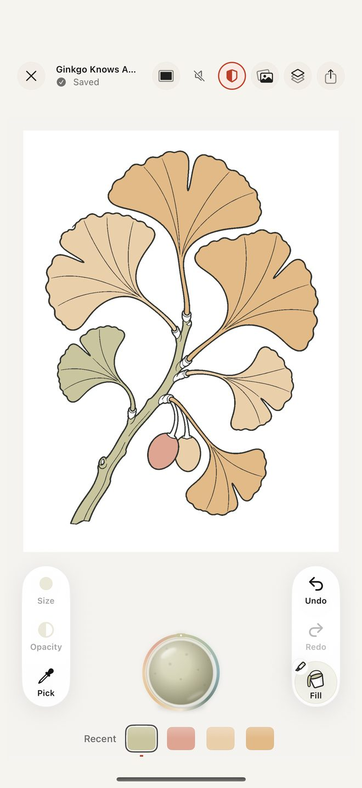
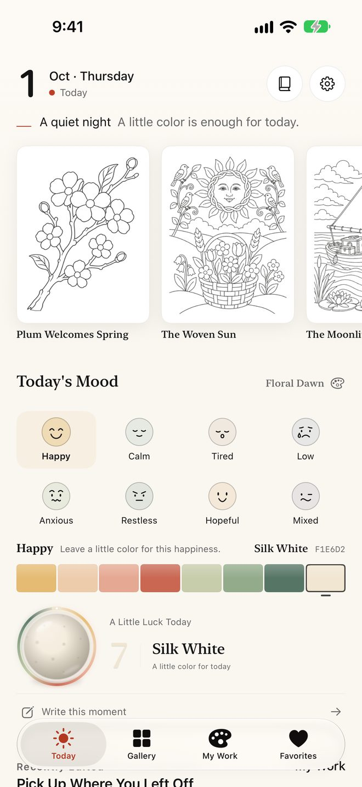
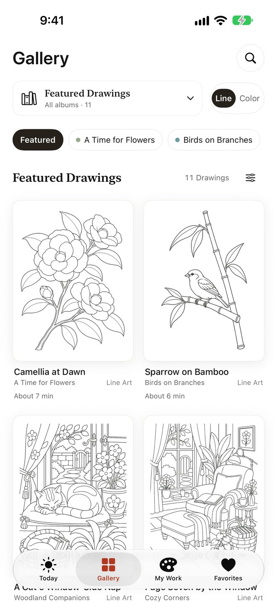
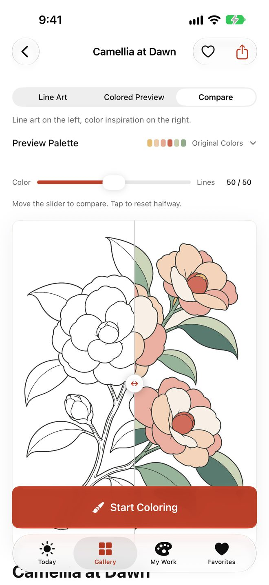
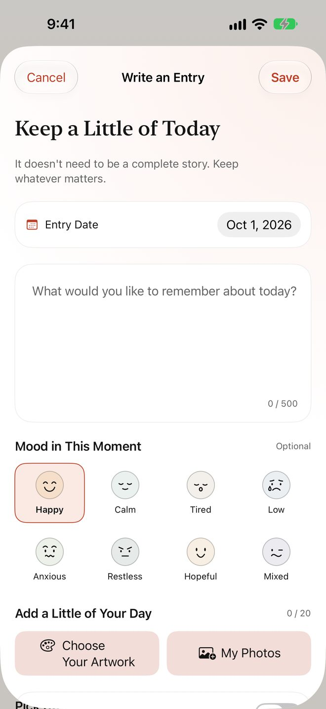
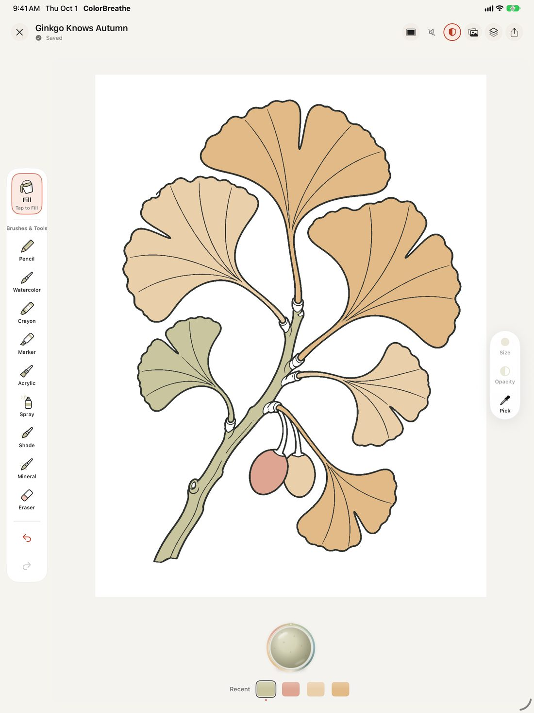

ColorBreathe: Coloring Diary
Color slowly. Keep your day.
Pick a page, add a few strokes, then keep today with a few words, a mood or a photo. ColorBreathe is a coloring diary for iPhone and iPad, and your artwork and diary stay on your device.
- 11 collections
- 132 drawings
- 10 brushes
- No ads
- No sign-up
- iPad & Apple Pencil

One page a day, one kind line
Open the app to today's drawing and a gentle line that never hurries you. Pick a mood and collect today's little lucky color; anything you started is waiting on Today, ready to continue.

11 collections, 132 drawings
A Time for Flowers, Birds on Branches, Woodland Companions, Cozy Corners, Sea and Sky, Seasonal Delights, Windows and Patterns, Tiny Fantasies, Country Lanes, Food and Craft and Storybook Wonder — from a single branch to a whole cottage, each with an estimated coloring time.
12 starter drawings and a daily page are free.

Not sure about colors? Follow a reference
Every drawing comes with a color reference. Drag the slider to compare line art with the colored preview, or borrow just a few of its colors and make your own version.

Worth keeping, finished or not
Write a few words, choose a mood, and attach today's artwork or a photo. Lock the diary if you like, or connect Apple Health so the moods you log there can suggest a palette (optional, read only — nothing is written to Health).

Ten brushes, room to breathe on iPad
Fill, pencil, watercolor, marker, acrylic, crayon, airbrush, soft shade, mineral and eraser, with layers, palettes, undo and redo. Compatible iPads support Apple Pencil in portrait and landscape.
When you're done, export a PNG, a share card or a replay of your drawing.

Your work stays yours
No data collected
No account, no ads, no analytics SDK and no tracking.
Saved on your device
Every stroke saves automatically; export a .colorbreathe backup whenever you like and take it to a new device.
Works offline
Coloring, the diary and exports need no connection; only purchases and restores talk to Apple.
Read the Privacy Policy.
Free to download, unlock when you want
The free version includes 12 starter drawings and a daily page, every brush, the diary and backups. For the full library, blank canvases, importing your own line art, and 4096-pixel and transparent exports, choose Full Access: a monthly or annual subscription (eligible accounts can try it free for 7 days), plus a lifetime purchase in mainland China. Prices are shown in the App Store.
Trials, renewals and cancelling are explained in Help & Support.
A look inside
Requires iOS / iPadOS 26 or later. Screens from version 2.1.